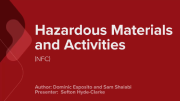

Codes Canada Seminars online video gallery
| Title | Description | Series | |
|---|---|---|---|
| Hazardous Materials and Activities (NFC) | Presentation 1 This presentation clarifies how the NFC now categorizes dangerous goods by types of hazards. This substantial change improves the availability of information on physical hazards in order to enhance the protection of human health, fire safety and the environment during the handling, transport and use of these chemicals. Participants will also learn about changes to the NFC concerning laboratories, hot works and storage tanks. |
2015 |  |
| National Energy Code for Buildings (NECB 2015) | Presentation 2 This presentation provides information on changes to the application and air leakage requirements of the NECB. Other topics include above-ground opaque building assemblies in semi-heated buildings, interior lighting power density values, interior lighting controls, and the relation between prescriptive requirements and the energy efficiency regulations. |
2015 | |
| Accessibility (Part 3 of the NBC) | Presentation 3 This presentation covers several updates to the design requirements on accessibility as well as a reorganization of Section 3.8. Participants will learn about new accessible path of travel requirements, changes to common design requirements such as controls, faucets and grab bars, and accessible plumbing facilities such as drinking fountains and showers. |
2015 | |
| Means of Egress (Part 3 of the NBC) | Presentation 4 This presentation covers changes that affect the capacity to exit a building during an emergency. This includes the exit capacity for nightclubs, the minimum distance between exit doors, signs prohibiting obstruction, electromagnetic locks and the minimum distance of turning landings. |
2015 | |
| Stairs, Guards and Handrails (NBC) | Presentation 5 This presentation provides information on several changes to stairs, ramps, handrails and guards, affecting both Part 3 and Part 9 buildings. These changes include an increase to the run dimension in stairs serving single dwelling units, harmonization of the height of guards serving a flight of exit stairs in Part 3 and Part 9 buildings, and a relaxation of the design parameters to limit climbing to allow more design choice in Part 3 and Part 9 buildings. |
2015 | |
| Seismic Design (Part 4 of the NBC) | Presentation 6 This presentation provides an update on the seismic hazard values that were recently updated across Canada. A simple and easily-applied methodology was developed for low hazard earthquake zones. Other topics include elevators and racking storage systems, glass glazing systems, foundation provisions and single-storey buildings with steel or wood diaphragms. |
2015 | |
| Structural Design (Part 4 of the NBC) | Presentation 7 This presentation provides information about changes to the requirements regarding load combinations, loads on guards, snow loads, wind loads, structural glass and the design of repair garages. |
2015 | |
| Wind Uplift Resistance and Other Fenestrations (Part 5 of the NBC) | Presentation 8 This presentation covers the new minimum performance levels for curtain walls, window walls, storefronts and glazed architectural structures as well as the testing requirements for wind uplift resistance of membrane roofing assemblies. |
2015 | |
| Exterior Insulation and Finishing System (EIFS), Airborne Sound Transmission, and Roofing (Parts 5 & 9 of the NBC) | Presentation 9 This presentation covers an important change to the way sound transmission is measured. The Apparent Sound Transmission Class (ASTC) was introduced to take into account flanking sound transmission in addition to the direct sound transmission. Participants will also learn how Exterior Insulation and Finishing System (EIFS) design and construction is now addressed, as well as deletions and replacements to roofing, dampproofing and waterproofing standards. |
2015 | |
| Heating, Ventilation, Air Conditioning (HVAC) and Plumbing (Part 6 of the NBC and the NPC) | Presentation 10 This presentation provides information on changes to the organization of Part 6 of the NBC. Participants will learn about updated outdoor design conditions as well as drain pan requirements for condensate, and separation distances of exhausts and outdoor air intakes. They will also learn about mandatory water-use efficiency requirements and the inclusion of stainless steel as an acceptable material in the NPC. |
2015 | |
| Building Envelope and Structure (Part 9 of the NBC) | Presentation 11 This presentation provides information on more stringent prescriptive requirements for lateral loads as well as updates to low permeance materials, limited water (LW) rated doors, snow loads and protection near cooktops. |
2015 | |
| Fire Protection (Part 3 of the NBC and the Appendix D) | Presentation 12 This presentation covers updated requirements related to the protection of foamed plastics, smoke tightness, smoke dampers and recently introduced requirements for self-storage buildings. Participants will also learn about the component additive method (CAM), which is used to assign the fire performance of specific combinations of building materials. |
2015 | |
| Mid-rise Combustible Construction (NBC and NFC) | Presentation 13 This presentation covers the requirements and hazards associated with the recently-introduced construction of 6-storey residential, business and personal services buildings using traditional combustible construction materials. |
2015 |
- Date modified: